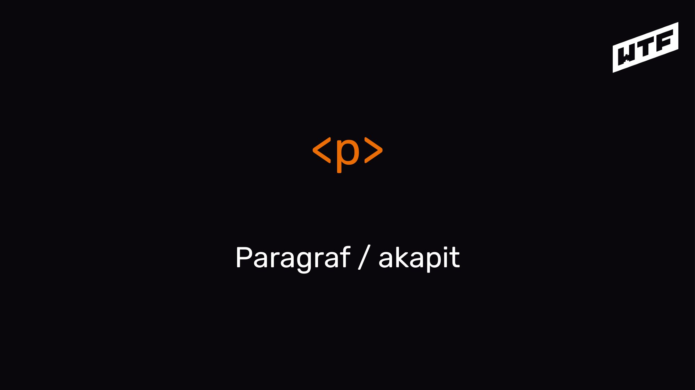
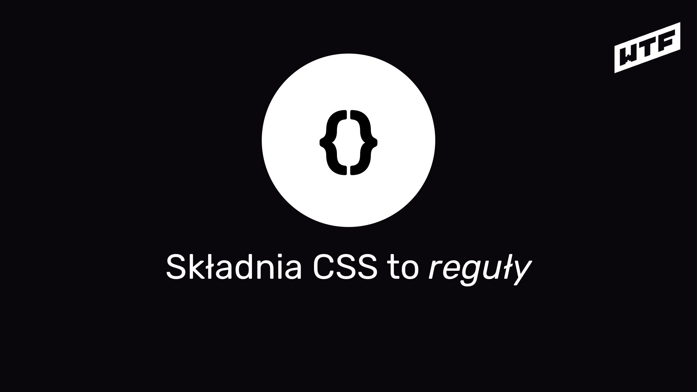

notatki z modułu 2
W main opakowywujemy unikalną treść dla danej strony
M02L02: WTF: HTML - podstawy języka [11:36]

WTF: HTML

HTML = HyperText Markup Language

HTML odpowiada za treść*
*a właściwie za jej właściwe opakowanie

3. JavaScript
2. CSS
1. HTML
0. TREŚĆ
Warstwy strony internetowej
Treść to:
- Teksty
- Nagłówki
- Linki
- Listy
- Definicje
- Obrazki
- Video
- Formularze
- Wszystko co jest nośnikiem informacji

</ > HTML składa się ze znaczników/tagów/elementów

<znacznik atrybut=”wartość”>treść </znacznik>
Budowa znaczników
Semantyczny = mający znaczenie

Pliki zawierające kod HTML mają zwykle rozszerzenie .html
M02L03: WTF: HTML - podstawowe znaczniki [19:19]

Tworzymy nasz pierwszy plik z HTML-em

HTML to szkielet strony internetowej*
*nawet ma taką budowę!

<html>
Jedna głowa <head>
Jedno ciało <body>
</html>
<main>
Główna część dokumentu

<section>
Sekcje dokumentu
<article>
Samodzielne treści

<header>
Nagłówek - dokumentu / sekcji / artykułu

<footer>
Stopka - dokumentu / sekcji / artykułu

<h1-h6>
Tekstowe nagłówki tytułowe - dokumentu / sekcji / artykułu

<p>
Paragraf / akapit
Jak sprawdzić czy mój HTML jest OK?
[W3 NU VALIDATOR]

HTML
- Opakowuje i opisuje treść strony
- Mówi przeglądarce o strukturze dokumentu (i o tym co ma wczytać)
- Posiada swoją zdefiniowaną składnie
- Nie jest językiem programowania, jest językiem znaczników (Markup Language)
- HTML5 stał się tak zwanym "living standard"
- Całą specyfikację znajdziesz na stronie w3c

To be continued...
M02L04: WTF: CSS (atrybuty, selektory, kolory) [12:46]
WTF: CSS

CSS = Cascading Style Sheets Kaskadowe arkusze stylów


CSS odpowiadają za prezentację

3. JavaScript
2. CSS
1. HTML
0. TREŚĆ
Warstwy strony internetowej

CSS wpływają na wygląd elementów HTML na ekranie, wydrukach itp.

{}
Składnia CSS to reguły

selektor {
właściwość: wartość;
}
Budowa reguły CSS

.css
Pliki zawierające kod CSS mają rozszerzenie .css*
*jest możliwość korzystania z reguł CSS bez używania zewnętrznych plików

Czas na pierwsze stylowanie

<style>
p {
color: red;
}
</style>
Znacznik <style>

<link href="style.css" rel="stylesheet" type="text/css">
Znacznik <link>
CSS
- Odpowiadają za prezentację treści strony
- Nie mają jednej wersji (rozwój modułów), potocznie mówi się, że aktualna wersja to 3
- Przeglądarki potrafią różnie interpretować CSS co prowadzi do tego, że...
- ... pisanie stylów powoduje wiele frustracji u programistów (ale jest też niezłym wyzwaniem :))
- Całą specyfikację znajdziesz na stronie w3c

To be continued...
M02L05: Devtools: podglądamy (i zmieniamy) istniejące strony [05:07]
M02L06: Formatowanie kodu [03:43]
M02L07: Klan - relacje między elementami [03:41]

WTF: Klan

HTML jako rodzina elementów

Węzeł / node

Rodzic - dziecko

To be continued
M02L08 Magia programowania [07:44]

Magia programowania

Czym jest programowanie?

Magia

Programowanie jak gotowanie*
*tylko przepisy często wymyślamy na bieżąco

ROBIMY HERBATĘ
(WERSJA SZYBKA - PROGRAMISTYCZNA)

1. Przygotuj czajnik, kubek, torebkę z herbatą

2. Zagotuj wodę

3. Wrzuć torebkę z herbatą do kubka

4. W momencie gdy woda zacznie wrzeć, przelej odpowiednią ilość do kubka

5. Odlicz czas zgodnie z instrukcją podaną na opakowaniu herbaty

6. Wyjmij torebkę, wypij herbatę

Co się stanie jak przekręcimy kolejność / zmienimy czas wykonywania poleceń?

Kolejność wykonywania kroków / instrukcji jest bardzo ważna!

ALGORYTMY

Schemat blokowy
START
Przygotuj czajnik, kubek, torebkę z herbatą
Wstaw wodę
Wrzuć torebkę do kubka
Czekaj
Czy woda się gotuje?
NIE
TAK
Wlej 250ml wrzącej wody do kubka i czekaj 5 min
STOP

Czym jest programowanie?

Zamiana ludzkiego języka na język zrozumiały przez komputer
Chcę, żeby po kliknięciu w ten przycisk tekst nagłówka zmienił się na "klik, klik!"
Moja strona
Mój nagłówek

Zamiana ludzkiego języka na język zrozumiały przez komputer
Chcę, żeby po kliknięciu w ten przycisk tekst nagłówka zmienił się na "klik, klik!"
Moja strona
Mój nagłówek

Zamiana ludzkiego języka na język zrozumiały przez komputer
Chcę, żeby po kliknięciu w ten przycisk tekst nagłówka zmienił się na "klik, klik!"
Moja strona
klik, klik!

ABC
Język programowania ma swoją składnie, gramatykę i ortografię

700+
Na świecie istnieje ponad 700 języków programowania

W tym szkoleniu skupimy się na jednym:
JavaScript

3. JavaScript
2. CSS
1. HTML
0. TREŚĆ
Warstwy strony internetowej

JavaScript (JS)
- Odpowiada za interakcje
- Pozwala na programowanie we frontendzie
- Potrafi wpływać na każdą z warstw
- Rozszerza możliwości zwykłych stron
- Aktualnie jest jednym z najpopularniejszych języków programowania na świecie

To be continued...
M02L09: Jak wygląda planowanie pracy za pomocą metody Kanban? [07:50]
M02L10: Tydzień II - prace domowe [04:22]

Tydzień II: Prace domowe

0. Baw się dobrze!

1. Stwórz projekt homepage
- Załóż katalog z plikiem index.html
- Utwórz podobne sekcje jak w lekcji o HTML
- Codziennie dopisuj nowy artykuł do notatek
- Sprawdź swój kod za pomocą validatora

2. Dodaj style
- W projekcie homepage utwórz plik style.css
- Ustaw tło strony na #fefefe
- Ustaw kolor nagłówków h2 na #1460AA
- Nie bój się eksperymentować!

3. Rozwiąż zagadkę

4. Myśl jak programiści

5. Zrób komuś kawał

6. Załóż tablicę na trello i wrzucaj tam prace domowe - śledź postęp!

Good luck!